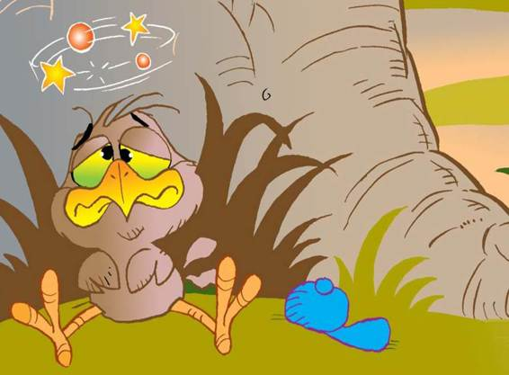

Down on the ground, little Billy was having a few troubled thoughts of his own. He had no worm. He had no nice warm nest. His parents were gone and he was all alone on the ground, the most dangerous place in the world for baby birds.
Billy peeked up above the grass and looked around. His eyes spotted a large gray tomcat making its way towards him. His heart froze. I’m in serious trouble, he said to himself. Billy decided to pray too. He prayed harder than he had ever prayed before, and he was very, very polite when he talked to Jesus.